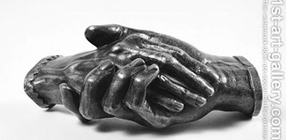

Bava Metzia 56 - Things not Subject to Price Fraud

These things are not subject to price fraud: the sale of slaves, notes of indebtedness, land, and Temple property. Furthermore, the twofold payment for stealing does not apply to them, nor does the penalty of fourfold or fivefold payment apply.
If any of these items was entrusted to an unpaid custodian, and he claims that the property was stolen, he is absolved from responsibility without having to swear that he was not negligent.
The verse discussing price fraud states "... and if you sell something to our fellow, or buy from the hand of your fellow ...", which indicates things being passed from hand to hand, and not fields or other items above.
Test your knowledge of the daf